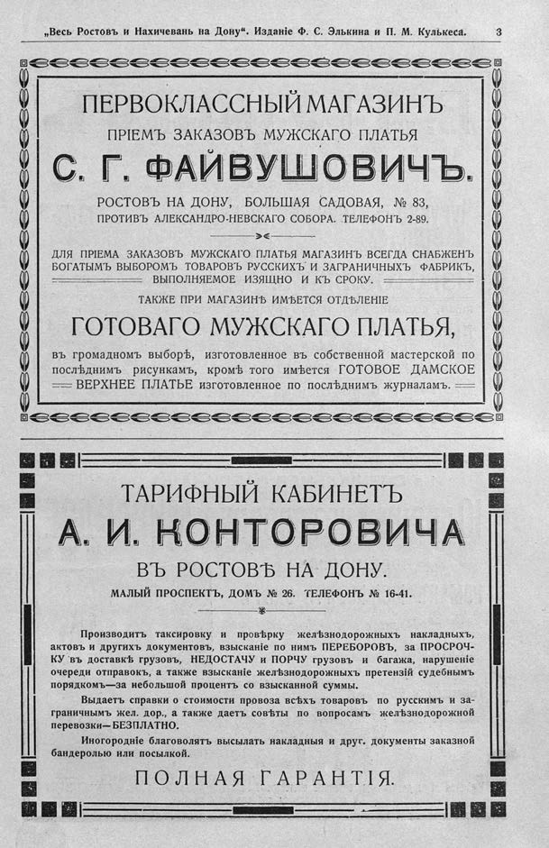

Лист источника 585
Скан

Распознанный текст
„Весь Ростовъ и Нахичевань на Дону“. Изданіе Ф. С. Элькина и П. М. Кулькеса. 3
ПЕРВОКЛАССНЫЙ МАГАЗИНЪ
ПРІЕМЪ ЗАКАЗОВЪ МУЖСКАГО ПЛАТЬЯ
С. Г. ФАЙВУШОВИЧЪ.
РОСТОВЪ НА ДОНУ, БОЛЬШАЯ САДОВАЯ, № 83,
ПРОТИВЪ АЛЕКСАНДРО-НЕВСКАГО СОБОРА. ТЕЛЕФОНЪ 2-89.
ДЛЯ ПРІЕМА ЗАКАЗОВЪ МУЖСКАГО ПЛАТЬЯ МАГАЗИНЪ ВСЕГДА СНАБЖЕНЪ
БОГАТЫМЪ ВЫБОРОМЪ ТОВАРОВЪ РУССКИХЪ И ЗАГРАНИЧНЫХЪ ФАБРИКЪ,
ВЫПОЛНЯЕМОЕ ИЗЯЩНО И КЪ СРОКУ.
ТАКЖЕ ПРИ МАГАЗИНѢ ИМѢЕТСЯ ОТДѢЛЕНІЕ
ГОТОВАГО МУЖСКАГО ПЛАТЬЯ,
въ громадномъ выборѣ, изготовленное въ собственной мастерской по
послѣднимъ рисункамъ, кромѣ того имѣется ГОТОВОЕ ДАМСКОЕ
ВЕРХНЕЕ ПЛАТЬЕ изготовленное по послѣднимъ журналамъ.
ТАРИФНЫЙ КАБИНЕТЪ
А. И. КОНТОРОВИЧА
ВЪ РОСТОВѢ НА ДОНУ.
МАЛЫЙ ПРОСПЕКТЪ, ДОМЪ № 26. ТЕЛЕФОНЪ № 16-41.
Производитъ таксировку и провѣрку желѣзнодорожныхъ накладныхъ,
актовъ и другихъ документовъ, взысканіе по нимъ ПЕРЕБОРОВЪ, за ПРОСРОЧ-
КУ въ доставкѣ грузовъ, НЕДОСТАЧУ и ПОРЧУ грузовъ и багажа, нарушеніе
очереди отправокъ, а также взысканіе желѣзнодорожныхъ претензій судебнымъ
порядкомъ—за небольшой процентъ со взысканной суммы.
Выдаетъ справки о стоимости провоза всѣхъ товаровъ по русскимъ и за-
граничнымъ жел. дор., а также даетъ совѣты по вопросамъ желѣзнодорожной
перевозки—БЕЗПЛАТНО.
Иногородніе благоволятъ высылать накладныя и друг. документы заказной
бандеролью или посылкой.
ПОЛНАЯ ГАРАНТІЯ.